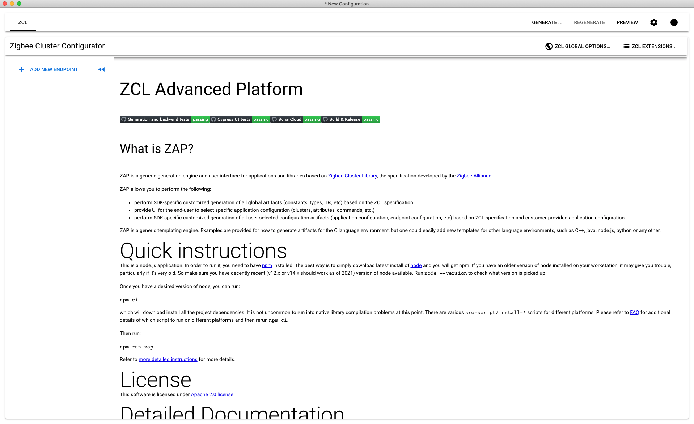

ZCL Advanced Platform (ZAP) Tool for Matter
Overview
EFR32 example applications provide a baseline demonstration of a lock device, built using the Matter SDK and the Silicon Labs GeckoSDK. It can be controlled by a CHIP controller over Openthread network.
The EFR32 device can be commissioned over Bluetooth Low Energy (BLE) where the device and the CHIP controller will exchange security information with the Rendez-vous procedure. Thread Network credentials are provided to the EFR32 device which will then join the network.
The LCD on the Silicon Labs WSTK shows a QR Code containing the needed commissioning information for the BLE connection and starting the Rendez-vous procedure.
The lock example is intended to serve both as a means to explore the workings of CHIP, and a template for creating real products on the Silicon Labs platform.
Each Matter application consists of the following layers:
Matter SDK: Source code necessary to communicate through the Matter network over Thread or Wi-Fi
Data model layer in the form of clusters. There are two types of clusters:
Utility Clusters:
They represent common management and diagnostic features of a Matter endpoint
Identify cluster is an example of a Utility Cluster. Given a Node ID, it can be used to Blink LED0 to the corresponding Silicon Labs WSTK
Application Clusters:
These clusters represent functionalities specific to a given application
Door Lock Cluster is an example of an Application specific cluster. This cluster contains commands to lock and unlock a door(door-lock is represented by an LED), with options to set passwords and lock schedules
Clusters
Every Matter Application uses multiple clusters leveraged from the Zigbee Cluster Library(ZCL). A cluster can be seen as a building block for the Data Model of a Matter application. Clusters contains attributes, commands, and events. Attributes are customizable variables specified by the Zigbee Advanced Platform(ZAP) tool. Commands are sent to the application, which may respond with data, LED flickering, lock actuation, etc. Events are notifications sent out by the server.
An application can have multiple Matter endpoints. Application endpoints generally refer to one device, and inherits its information from the “cluster” it belongs to. Utility clusters are required to be on the endpoint with ID 0. Application clusters are assigned to endpoints with IDs 1 and higher.
Some applications have callbacks that are left to be implemented by the device manufacturer. For example, the storage and management of users and credentials in the lock-app is left up to the application developer.
ZAP Tool
The ZAP tool is built and maintained by Silicon Labs and developers in the ZAP opensource community. It inherits its name and features from the Zigbee Cluster Library, which was the starting point for the Matter data model. ZAP is used for generating code for Matter applications based on the Zigbee Cluster Library and associated Matter code templates.
The ZAP tool is no longer present as a submodule in the Matter repo. The ZAP tool can be downloaded as a binary from GitHub or optionally you can clone the entire ZAP repo and build the ZAP binary from scratch.
ZAP binaries can be downloaded from the latest ZAP release here:
https://github.com/project-chip/zap/releases/latest
Optionally, the ZAP tool can be cloned using the following git command. This will create a root level zap folder in your current directory.
$ git clone https://github.com/project-chip/zap.git
The ZAP tool can be invoked using the run_zaptool.sh script located in the Matter repo at
./scripts/tools/zap/run_zaptool.sh. Before you run this script you have to provide the location of the ZAP instance to be run. This is either the binary that you downloaded or
the binary that you built from scratch in the ZAP repo. You can do this by setting the ZAP_INSTALL_PATH environment variable
like this:
$ export ZAP_INSTALL_PATH=(path to your instance of the ZAP binary)
The run_zaptool.sh script can be invoked without arguments, or, you can
provide the path to a ZAP file to be opened upon launch.
In the following examples, the ZAP file for the lock-app has been chosen.
$ ./scripts/tools/zap/run_zaptool.sh ($PATH_TO_ZAP_FILE)
ZAP files for the various sample applications are included in the sample applications data_model directory such as
./examples/lighting-app/silabs/efr32/data_model/lighting-thread-app.zap.
This shows the output of the run_zaptool script with no arguments. To load a new zap file, click the application menu for Electron (Upper left corner of the screen for macs), then click “Open File”. Then navigate to the desired .zap file.

This shows the output of the run_zaptool script with a zap file given as an argument, or after a .zap file has been opened in the ZAP UI. An Electron application will open, pre-loaded with the information from the .zap file provided as a command line argument.
The Out of the box(OOB) example lock application has 2 endpoints. Endpoint 0 is called the root node. It contains all Service and Device management clusters. In general, any cluster or feature that is not specific to a device type belongs in Endpoint 0. Examples of clusters one might find in Endpoint 0: Device Descriptor cluster, Network Diagnostics cluster.
Endpoint 1 contains information specific to the device type. Conveniently, the ZAP tool offers a Door lock cluster, which contains Commands(lock, unlock, set credential, etc…) and Attributes(Lock state, Require PIN) that a standard door lock application might use.
More endpoints can be added. Each endpoint acts like a port on a network interface.
Endpoints contain clusters which are bundles of device functionality. Clusters have both a Client and a Server interface. In general the Client interface sends commands and the Server interface receives them. For instance a Light would implement the Server side of the on/off clusters. A Switch would implement the Client side of the same cluster.
Click on Endpoint 1 on the left hand side of the application. The door lock cluster should already be enabled as “Server”.
Attributes
Attributes are analogous to member variables of a class. Each attribute is provided with generated setter/getter code from the ZAP tool. They can be enabled or disabled for each cluster on a Matter endpoint. Some attributes are required to be enabled, else the application will not function properly. There is an option to add attributes to either the server code or client code. The ZAP tool also allows you choose a storage space for attributes. Attributes can be stored in standard RAM, Non-volatile memory or external memory. Each attribute has a type, some are standard C types and some have specially defined enums. Each attribute can be provided with a default starting value value.
Click the settings wheel to enable/disable, choose a storage option, and choose a default value for attributes, commands and events for Endpoint 1.
Commands
Commands can be enabled/disabled like attributes. Some commands are required for an application to function properly. Many of the functions run when a command is received are implemented on the server side. But some of these are left up to the application to define. In the EFR32 lock example, the set/get user and credential functions are customizable as each implementation of a lock might store these differently.
Generation of Code
Once you have chosen the cluster options, save the current ZAP configuration using the application menu in the upper left corner.
Before v1.1.0-1.1 you needed to click the Generate button to generate code. Now, code is generated automatically in the save function. You will be prompted to choose a save location for the generated ZAP code. In the Silicon Labs Matter repository, the lock-app generated files belong in matter/zzz_generated/lock-app/zap-generated .